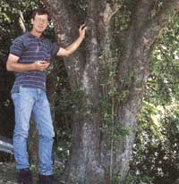
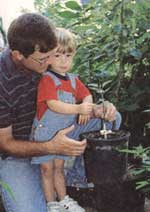
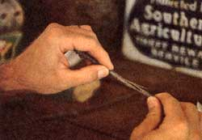
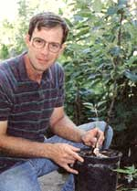

WHEN TO PLANT. Bare-root trees can be planted spring or fall. Many people prefer fall planting as it allows a tree to get its roots established before putting out top growth. Years ago, tree salesmen claimed you could gain half a year's growth on a fallplanted tree.
STANDARD VS. SEMIDWARF. Most southern varieties available today are propagated on standard or semidwarf rootstock. Standard trees are long-lived, 50 to 75 years, but harder to maintain. They should be spaced 30 to 40 feet apart. Semidwarf trees are easier to maintain but have a life span of only 25 or 30 years. Semidwarf trees should be spaced 15 to 25 feet apart.
SITE SELECTION. Apple trees should be planted in full sun, where possible. Six hours of sunshine is the minimum. Full sun encourages vigorous growth and full-bodied fruit. It inhibits fungal diseases. At the same time, apples should not be planted on harsh western or southern exposures. In contrast to peaches and plums, apples prefer the cooler northern and eastern slopes.
AIR FLOW. Apples should be planted where there is good (but not excessive) air flow. Upland slopes running perpendicular to prevailing winds are the ideal. Valleys and ridge tops are the places to avoid. If you have no option but to plant in a valley, try a late-blooming variety like Bramley's Seedling, Court-Pendu Plat, Mother, Cox's Orange Pippin, Mollies Delicious, Ralls Janet, or Sweet Sixteen. If a peak is your only option, go with something tough like Smokehouse or Ben Davis.
BE CAREFUL. Protect bare-root trees from exposure to sun and wind prior to planting. If unable to plant quickly, heel the trees in. A good way to transport trees just prior to planting is to set the roots in a five-gallon bucket of water.
HOW BIG THE HOLE? Dig the tree hole a foot or so deep and a couple of feet wide-big enough that no roots will be cramped.
HOW DEEP THE PLANT? Plant semidwarf trees with the graft union two to three inches above the ground. If the union is buried, the tree may root from the scion and become a standard tree. Plant standard trees an inch or so deeper than they were in the nursery, with the graft union at or below ground level.
WHAT ABOUT THE ROOTS? Roots covered with clay should be soaked prior to planting. Prune off any broken or damaged roots. Long roots may be removed as necessary.
FILL 'ER UP. Spread the roots naturally in the hole and fill with good soil. Tamp the soil sufficiently to remove large air pockets. Heavy soils should be amended with bark or compost, but don't overdo it. Too much organic matter can make the hole soggy and cause root rot.
A LITTLE RESTRAINT. Fertilize newly planted trees with a little bone meal or rock phosphate to stimulate rooting. Do not use nitrogen fertilizers the first spring as they promote quick top growth without proper root support. Later in the season you can bring out the big guns: manure, compost, or fish emulsion.
H20. Give newly planted trees plenty of water. This pro motes good soil-to-root contact. It is also important to monitor the soil during the first growing season. If dry to the touch a couple inches down, it's time to get the hose. A good rule of thumb is to water two to three times a week during dry spells.
PRUNING. Transplanted trees need to be pruned to compensate for root loss. Prune two- and three-year trees to stubby scaffold branches. Head one-year trees to about 30 inches. Heading determines the position of a tree's lowest branches. Five feet is high, two feet is low. Years ago, folks headed high in order to plant crops and cultivate between rows. Today, most people head low; it makes for easier picking.
MAIL-ORDER NURSERIES
Ames' Orchard & Nursery
18292 Wildlife Road, Fayetteville, AR 72701
(501) 443-0282. Catalog free.
Ames' specializes in disease-resistant apple varieties.
Bear Creek Nursery
P.O. Box 411, Northport, WA 99157. (509) 732-6219.
Catalog free. One of the more informative catalogs around.
Burford Brothers
P.O. Box 367, Monroe, VA 24574
(804) 929-4950. Price list free. Descriptive catalog $2. Tom Burford conducts yearly apple tastings at Monticello.
Calhoun's Nursery
295 Blacktwig Road, Pittsboro, NC 27312
(919) 542-4480. Catalog $1.
Lee Calhoun is author of the definitive work, Old Southern Apples, published in 1995. He and his wife, Edith, have the largest collection of old southern apples in existence.
Classical Fruits
8831 AL Highway 157, Moulton, AL 35650
(205) 974-8813. Catalog free.
Hidden Springs Nursery
170 Hidden Springs Lane, Cookeville, TN 38501
(615) 268-2592. Catalog $1.
Johnson Nursery
Route 5, Box 29J, Highway 52, Ellijay, GA 30540
(706) 276-3187. Catalog free.
Lawson's Nursery
2730 Yellow Creek Road, Ball Ground, GA 30107
(770) 893-2141. Catalog free. Good selection of unique southern varieties. One of the first nurseries specializing in old southern apples.
Long Hungry Creek Nursery
Box 163, Red Boiling Springs, TN 37150.
No telephone. Price list free. Jeff Poppen specializes in old and new diseaseresistant apples.
Southmeadow Fruit Gardens
10603 Cleveland Avenue, Baroda, MI 49101
(616) 4222411. Free price list. Illustrated catalog $9. Southmeadow offers over 250 apple varieties.
Urban Homestead
818 Cumberland Street, Bristol, VA 24201
(540) 466-2931. Free descriptive catalog. The author's nursery.
M. Worley Nursery
98 Braggtown Road, York Springs, PA 17372
(717) 528-4519. Catalog free.
|
 |
|
 |
|
 |
 |
|